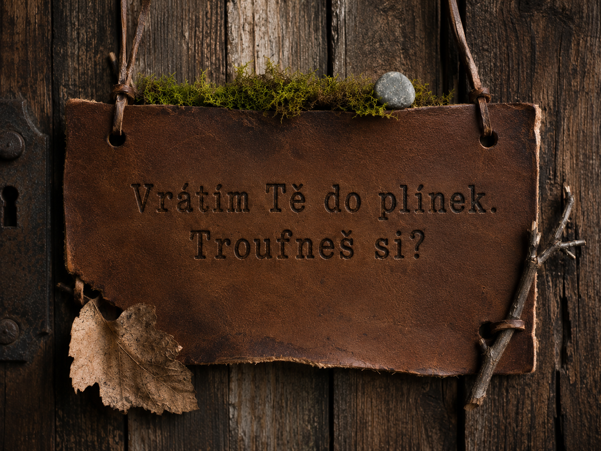
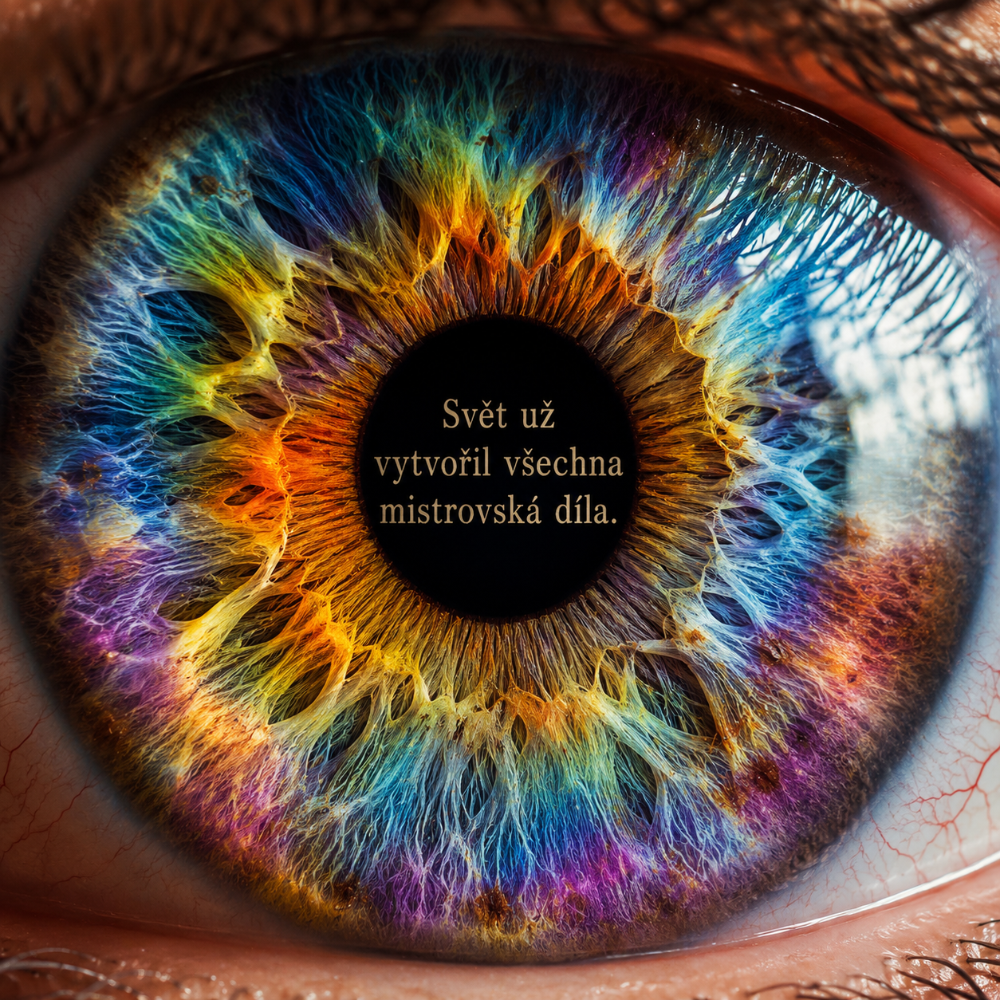

Budoucnost? Návrat ke kořenům
Možná to zní jako protiklad.
Budoucnost a návrat ke kořenům.
Ale právě v tom vidím směr, kterým bych chtěla Handmade Calwen vést.

Když se podívám zpátky na všechny ty roky, je zvláštní vidět, kolik různých věcí se mezi první tašticí a dnešní dílnou stihlo objevit.
Nové techniky. Nové materiály. Nové nástroje. Nové nápady.
Pořád jsem něco zkoušela.
Ale čím víc jsem se učila, tím víc se vracím k jedné jednoduché myšlence.
Že není potřeba pořád přidávat další.
Někdy stačí podívat se pořádně na to, co už kolem sebe máme.
Už čtyři roky hledám něco, co by nebylo jen názvem nebo značkou. Něco, co by mělo vlastní myšlenku. Něco, co by člověku nepřineslo jen další věc, ale i důvod se na chvíli zastavit.
A postupně se vracím k jedné jednoduché otázce:
Kolik věcí kolem sebe každý den vidíme, ale už je vlastně nevnímáme?
Stéblo trávy u cesty.
Květinu, kolem které projdeme bez povšimnutí.
Kůru stromu, která pod rukou skrývá neuvěřitelnou strukturu.
Včelku, která tiše pokračuje ve své práci.
Jak často se ale opravdu zastavíme a podíváme se?
Ne jen zběžně.
Opravdu.
Co bychom viděli, kdybychom se přiblížili? Kdybychom se podívali zblízka, pomalu a s pozorností?
Právě tady bych chtěla Handmade Calwen posunout dál.
Ne od ruční práce pryč, ale ještě hlouběji do ní.
K detailu. K textuře. K přírodě. K drobnostem, které normálně přehlížíme.
K věcem, které nevzniknou za pět minut a jejichž hodnota není jen v tom, že jsou nové.
Chci tvořit věci, které člověka přimějí podívat se podruhé.
Možná si všimnout struktury, které by si jinak nevšiml.
Možná se dotknout povrchu a uvědomit si, že není hladký jen proto, že to tak na první pohled vypadá.
Možná si na chvíli vzpomenout, že svět není jen obrazovka, termín, cesta, práce a další úkol.
Je i kolem nás.
A je plný detailů.
Pojďme se společně na chvíli zastavit.
Podívat se znovu na svět kolem sebe.
Já vám ukážu, co v něm vidím já.
A možná si pak začnete všímat i toho, co jste předtím přešli bez povšimnutí.
